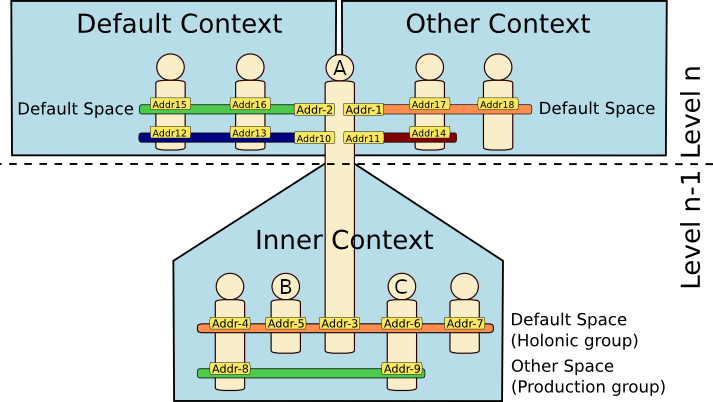

Management of the Failures and Validation Errors
As for the Akka actor framework, there is an important distinction between failures and validation errors:
-
A validation error means that the data of a command sent to an agent is not valid, e.g. an unexpected event according to a communication protocol. This should rather be modelled as a part of the agent protocol than make the agent throw exceptions.
-
A failure is instead something unexpected or outside the control of the agent itself, for example a database connection that broke. Opposite to validation errors, it is seldom useful to model such as parts of the protocol as a sending agent very seldom can do anything useful about it.
This reference page describes the basics of the management of these two types of problems from SARL agent-oriented programming point of view.
Note SARL provides standard programming tools for handling the run-time problems: the exceptions and the assertions. These tools are very interesting from the programming point of view. However, they are not specific to agent programming (they already exist in main stream languages such as Java).
1. Fault Handling through Events
As SARL has adopted an event-based programming philosophy, most of the fault handling that is not directly supported by the exception catching mechanism is based on the definition of events and the corresponding handlers.
1.1. General Framework
The SARL API defines a specific event that is representing any failure or validation error that the agent could handle if it is interested by: io.sarl.core.Failure.
Each time an agent needs to be notified about a fault (into its agent tasks for example), an occurrence of this event type is fired in the internal context of the agent.
There is plenty of causes for a validation error or a failure. Since the Failure event type is general, it is possible to refine its meaning by extending it with an event sub-type, e.g.:
event MyAgentPersonalFailure extends Failure
The definition of these new types of events following the general rules for the event definition. As for all the SARL events, they must be fired into a space for being processed by an agent.
1.2. Parallel Task Failures
As soon as an agent starts parallel tasks, these tasks may fail.
The SARL API provides a specific failure event sub-type that is describing the cause of a failing task: io.sarl.core.TaskFailure.
This event is fired each time an exception is thrown into a parallel task.
In addition to the field cause, the TaskFailure event contains the reference to the failing task, accessible with the task field.
The following code shows an example of the submission of a failing parallel task, and the catching of this failure with a TaskFailure event handler.
agent MyAgent {
uses Logging, Schedules
on Initialize {
in(1.seconds) [
throw new MyError
]
}
on TaskFailure {
var reason : Object = occurrence.cause
var task : AgentTask = occurrence.task
info("Task failed:" + task
+ " because of: " + reason)
}
}
1.3. Over Types of Failures
It is still possible for you to define your own failure events. You only need to define a sub-type of Failure.
For example, the following code define the MyFailure event:
event MyFailure extends Failure
According to the SARL capabilities for defining the events, you could add your own attributes in this new event.
Usually, a failure event is fired into the internal context of the agent, using the wake function that is provided
by the Behaviors capacity. For example:
event MyFailure extends Failure {
var mydata : String
}
agent MyAgent {
uses Behaviors
def aFunctionInMyAgent {
// Build the failure
var failure = new MyFailure("this is the cause of the failure")
failure.mydata = "This my additional data"
// Fire the failure
wake(failure)
}
}
1.4. Abnormal Agent Killing
An agent may be destroyed due to an internal fault. However, according to the SARL metamodel and the implementation choices of the SARL Run-time Environment, if a failure or an error occured into the agent, only the associated failing task is broken. The agent is still alive and may react to over events.
In order to be killed, an agent has to invoke the killMe function from the Lifecycle built-in capacity, as illustrated below:
agent MyAgent {
uses Lifecycle
on MyEvent {
killMe
}
}
The call to the killMe function causes the firing of an AgentKilled event.
In the case the agent would like to stop its life on a failure, the killMe accepts an object as argument that is describing the cause of the termination of the agent:
agent MyAgent {
uses Lifecycle
on MyEvent {
killMe("The reason of my death")
}
}
The type of the data that describes the killing reason is application-dependent and up to you.
The reason of the killing of an agent may be retrieved from the AgentKilled event:
agent MyOtherAgent {
uses Logging
on AgentKilled {
info("Agent " + occurrence.source.ID
+ " is dead because: "
+ occurrence.terminationCause)
}
}
2. Propagating Failures in Holarchy
As described in detail into the agent reference page, > agents can be composed of other agents.
Therefore, SARL agents are in fact holons that can compose each other to define hierarchical or recursive
multi-agent system, called holarchies.
The following figure illustrates this hierarchical relationship between the SARL agents.
Agent with the name A is the parent of four agents, including those named B and C.

It is then interesting to propagate a fault that occured into an agent to its parent agent, or to one or more of its child agents.
2.1. Propagating to Parent Agents
The SARL API provides the necessary functions for propagating events to the parent agent.
Important The parent agent is the agent that is owning the default space of the child agent
The function emitToParent, defined into the DefaultContextInteractions built-in capacity enables to automatically forward an event to the parent agent.
In the following code, the agent B forwards automatically the failure events to its parent agent A.
agent AgentB {
uses DefaultContextInteractions
on Failure {
emitToParent(occurrence)
}
}
2.2. Propagating to Child Agents
These is no specific function provided by the SARL API for forwarding the failure events (or more generally the events) to the child agents. You must use the standard API for emitting the events into spaces (the default space or other spaces).
In the following code, the agent A forwards automatically the failure events to its child agents, including B and C.
agent AgentA {
uses Behaviors
on Failure {
wake(occurrence) [ it.ID != ID ]
}
}
3. Legal Notice
- Specification: SARL General-purpose Agent-Oriented Programming Language (“Specification”)
- Version: 0.12
- Status: Draft Release
- Release: 2020-12-31
Copyright © 2014-2020 the original authors or authors.
Licensed under the Apache License, Version 2.0; you may not use this file except in compliance with the License. You may obtain a copy of the License.
You are free to reproduce the content of this page on copyleft websites such as Wikipedia.
Generated with the translator io.sarl.maven.docs.generator 0.12.0-SNAPSHOT.